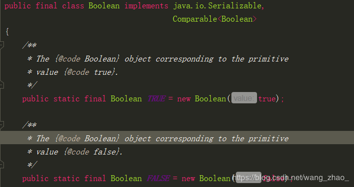

Java基础提高（一）
最近开始Java的复习，弥补一下从前的知识盲区且深入底层去学习Java，通过了解源码更加深入的去了解Java。
1.面向过程和面向对象的区别
我们都知道C语言是一门完全面向过程的语言，当我们要是实现某些需求时，我们更在意的是如何通过一个函数去实现该需求。
而在Java中我们更加在意的是对象，哪些对象拥有哪些功能。当我们面对一个需求时，让这些对象去实现某些需求。
以将大象装入冰箱为例，面向过程我们可能会这样做：我们把冰箱门打开，我们把大象装进冰箱，我们把冰箱关闭。
而面向对象我们可能会这样做：首先进行分析，该需求有两个对象，冰箱和大象。冰箱有如下功能：打开、关闭。大象有如下功能：走到冰箱中。实现该需求过程如下：冰箱开门，大象走进冰箱，冰箱关门。
显而易见：面向过程更加在意的是我们实现这个需求的过程，而面向对象则是通过对对象的分析，让其他对象去完成该需求。
如果你刚接触Java，可能并不能体会到什么叫面向对象，比如我们写一个方法，你觉得这个实现过程和面向过程的实现并没有区别。这是因为面向对象只是在宏观上是面向对象，微观上依然是面向过程。
简而言之，面向过程是我们自己去做，面向对象是让别人去做。
当然面向面向并不仅仅局限于此，其三大特征为：封装、继承、多态。
2.JDK和JRE的区别
JDK是Java程序的开发包，而Jre只是Java程序的运行环境。JDK包含了Jre，JDK中的bin目录中有如下程序javac.exejava.exe,javap.exe等,javac用于编译Java程序的源代码，生成字节码文件；java用于运行编译后的字节码文件，javap用于反编译，可以查看编译后的指令等。
3.基本数据类型和包装类型
| 基本数据类型 | 包装类型 | 字节 |
|---|---|---|
| boolean | Boolean | - |
| byte | Byte | 1 |
| short | Short | 2 |
| char | Character | 2 |
| int | Integer | 4 |
| float | Float | 4 |
| double | Double | 8 |
| long | Long | 8 |
| void | Void | - |
说明：
1、boolean类型所占的存储空间的大小没有明确知道，仅定义为能够取字面值true或false。
2、一个boolean变量在编译后以一个int代替，一个boolean数组编译后，数组中每个成员是一个byte。
3、《Java编程思想》中将void列为基本类型，但是其他资料并没有认为void是基本类型，Void的源码中说明该类是一个占位符类。
4、在Java中，认为一切皆对象，但是由于基本类型并不是对象，便引入了包装类型，实现基本类型和包装类型的相互转化。
5、基本类型和包装类型的区别：
(一)初值不同，如boolean的初值为false,int的初值为0，而包装类型的初值为null(注意：这里的初值是位于类中的成员变量而不是方法中的变量，方法中的变量必须赋初值才能使用)；
(二)存储位置不同，基本类型存储位置在栈中，而包装类型的存储位置位于堆中；
(三)在与集合类共同使用时，必须使用包装类型。
4.自动装箱和拆箱
JDK1.5后引入了自动装箱和拆箱，从而实现基本类型和包装类型的自动转换。自动装箱调用的是valueOf()方法，而自动拆箱调用的是(基本类型+Value())方法，例如Integer实现自动拆箱调用的是intValue()。
1 | Integer a = 1; |
运行段代码后，输出应该为：
1 | true |
这是因为 == 比较的是地址，而Integer存在缓存池，进行自动装箱且值位于-128 - 127时，从缓存池中返回对应的Integer的引用，所以a,b的引用相同。而c、d并没有进行自动装箱，而是自己在堆中 new 对象，每个对象的引用。
1 | public static Integer valueOf(int i) { |
那么对于其他的包装类型，是否也同样有缓存池呢？
1 | Boolean a = true; |
输出结果如下：
1 | true |
通过观察源码，发现类中有这样两个常量：

当我们进行自动装箱时，返回这两个对象的引用。
我们再来看看其他的包装类：
1 | Double a = 1.0; |
猜测一下答案吧，可能会有点出乎你的意料，答案是：
1 | true |
这当然是因为并不存在缓存池了，想想也是。对于浮点型，要创建它的缓存池好像也做不到吧。
| 包装类型 | 是否存在缓存池 | 范围 |
|---|---|---|
| Boolean | 不存在，但是存在两个常量 | |
| Byte | 存在 | -127 - 128 |
| Short | 存在 | -127 - 128 |
| Charcater | 存在 | 0 - 127 |
| Integer | 存在 | -127 - 128 |
| Float | 不存在 | |
| Double | 不存在 | |
| Long | 存在 | -127 - 128 |
值得注意的是Integer缓存池的上限可以我们自己定义，但是不能超过127，而其他包装类型的范围都是已经确定了的。
不知道你有没有写过这样的代码？将一个int直接自动装箱为Double。如果没有的话，可以去尝试一下，结果可能会出乎你的意料。
1 | public static void main(String[] args) { |
如上所示，你可能会认为Double自动装箱的话调vlaueOf(double d)那么的话，我的1可以自动类型转换为1.0，那我当然可以实现自动装箱了，然而编译结果如下：
可以这样理解，自动装箱的过程中关闭了自动类型转换。